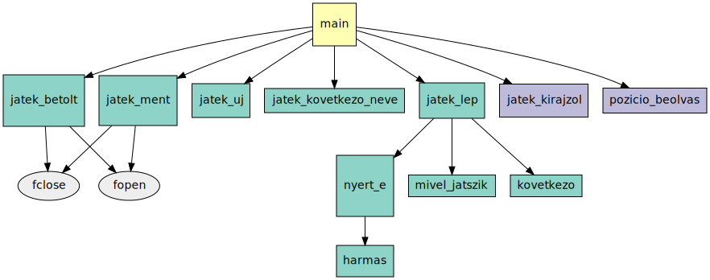
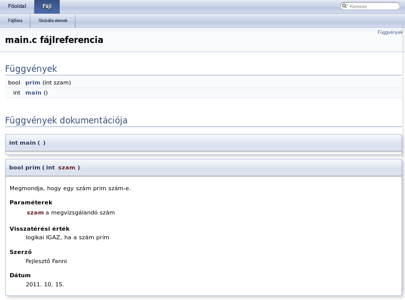

Az elindított programoknak is lehet paramétereket adni:
C:\> notepad.exe szoveg.txt
A main() függvény sztring mutatók tömbjében kapja meg ezeket:
int main(int argc, char *argv[]) { // vagy char **argv
...
}A main() függvénynek a C nyelvben két
paramétere van. Az első a parancssorból kapott, szóközzel elválasztott
paraméterek számát mutatja, ezt argc-nek szokás nevezni (argument
count). A második pedig sztringek tömbje, ez a paramétereket tartalmazza. Ennek
szokásos neve az argv (argument vector). Mivel ennek típusa
pointerek tömbje, a main() függvény fejlécében ez megadható
char *argv[] és char **argv formában is.
Például:
C:\> teszt.exe elso "masodik szo"
↑ ↑ ↑
argv[0] argv[1] argv[2] argv[3]=NULL
argc=3 !
Az argv[] tömb nulladik eleme, argv[0]
a program nevét tartalmazza, a tényleges paraméterek csak ezután jönnek. Ez okozza azt,
hogy az első tényleges paraméter (a fenti példában az "elso") nem a tömb
nulladik, hanem első indexű helyén van. A paraméterek számába a program saját neve
is beleszámít, ezért a fenti példában argc értéke nem kettő, hanem három.
Ha a programban a kapott parancssori paraméterek számát ellenőrizni szeretnénk, ezt
figyelembe kell venni. Az argv[] tömb méretét nem csak az argc
változón keresztül tudjuk egyébként vizsgálni, hanem azon keresztül is, hogy egy
NULL pointerrel van lezárva. Mindezt könnyű fejben tartani: elég, ha
megjegyezzük, hogy argv[argc] = NULL.
A main() visszatérési értéke egy egész szám. Átveszi az operációs rendszer, és átadja a
programnak, amely elindította a mienket.
Visszatérés hibakóddal:
int main(int argc, char *argv[]) {
if (argc - 1 != 2) {
printf("Két paraméter kell!\n");
return 1; // hibakód
}
/* a program tényleges dolgai ... */
return 0; // minden oké
}Vigyázat: ez nem logikai típusú érték!
- A 0-val tudjuk jelezni, hogy minden rendben.
- Bármi más pozitív szám: általunk meghatározott hibakód.
Mire jó ez?
rm szoveg.txt || echo "Nem sikerült törölni a fájlt!"
A visszatérési értékek lehetővé teszik, hogy a parancssorban összekössük az egymás után futó programokat
aszerint, hogy sikeres volt-e a végrehajtásuk. A Unix parancssorában például az || operátor csak akkor hajtja végre
a második parancsot, ha az első sikertelen volt. Jelen példában ez azt jelenti, hogy ha az rm program 0-tól különböző
kóddal tért vissza a maga main() függvényéből, akkor hajtódik csak végre az echo program, amelyik a
hibaüzenetet kiírja. Amúgy ez elmarad, mert ha sikeres volt a törlés, nincs szükség hibaüzenetre.
Példa az argumentumokra és a main() visszatérési értékére:
#include <stdio.h>
int main(int argc, char *argv[]) {
int egyik, masik;
/* 1-gyel tobb, mint a parameterek */
if (argc-1 != 2) {
printf("%s: ket szamot adj meg!\n", argv[0]);
return 1; /* nem ket parameter van: 1-es hibakod */
}
if (sscanf(argv[1], "%d", &egyik) != 1) {
printf("Hibas elso parameter: %s!\n", argv[1]);
return 2; /* 2-es hibakod: hibas parameter */
}
if (sscanf(argv[2], "%d", &masik) != 1) {
printf("Hibas masodik parameter: %s!\n", argv[2]);
return 2;
}
printf("Az osszeguk: %d\n", egyik + masik);
return 0; /* 0-s kod: minden rendben, feladat elvegezve */
}Fontos emlékezni arra, hogy az argv[]
sztringeket tartalmaz. Ha számokat veszünk át paraméterként, azt is sztringként
kapjuk! Ilyenkor az atoi() vagy az sscanf()
függvényhívással lehet számmá alakítani.
A fájlok kezelése az stdio.h-ban megadott FILE* típusú pointerrel és függvényekkel lehetséges.
FILE *fp; // fájl mutató (file pointer/handle)
fp = fopen("szoveg.txt", "wt"); // megnyitás
if (fp == NULL) {
perror("Fájl megnyitása sikertelen");
return; /* nem folytathatjuk! */
}
fprintf(fp, "Hello, vilag!\n");
for (int i = 0; i < 10; ++i)
fprintf(fp, "%d ", i);
fclose(fp); // bezárásA keletkező fájl:
Hello, vilag! 0 1 2 3 4 5 6 7 8 9
- Megnyitás módja: írás (w) / olvasás (r), szöveges (t) / bináris (b).
- Az
fopen()visszatérési értéke: hivatkozás a nyitott fájlra.
Sikertelen megnyitásnálNULLpointer – ezt ellenőrizni kell.
A megnyitott fájlt a programunkban egy FILE* típusú változó reprezentálja. Ez egy pointer,
amelyik tetszőlegesen eltárolható, akár átadható függvényeknek. A fájl megnyitását az fopen()
függvénnyel tudjuk elvégezni; ha sikeres volt a művelet, ez nem NULL értékű pointert ad vissza.
Ez az, amit eltárolunk a FILE* változónkban. Ha végeztünk a feladatunkkal, az fclose()
függvénnyel zárhatjuk be a fájlt. Ez kötelező! Ha nem tesszük meg, akár adatot is veszíthetünk; előfordulhat,
hogy a legutóbbi írási műveletek eredménye nem kerül ténylegesen a fájlba.
Ügyelni kell a fájlnevek megadására. Windowson az elérési útban \ az elválasztó: C:\Windows\hatter.bmp, Unixon / van:
/usr/bin/firefox. Az fopen() mindig elfogadja a /-t. Ha a \-hez ragaszkodunk, azt viszont \\-nek kell írni a sztring
belsejében, mivel a \ önmagában a speciális karaktereket jelöli (pl. \n).
Az olvasáson (r) és íráson (w) kívül létezik még két további megnyitás mód is:
- hozzáfűzés (a). Ilyenkor a fájlt írásra nyitjuk meg, de a meglévő tartalmát meghagyva. Az írás mutató a fájl végére mutat, vagyis a meglévő tartalomhoz hozzáadva lehet folytatni az írást.
- írás-olvasás (+). Ilyenkor írni és olvasni is lehet. Más betűkkel együtt használjuk: pl. r+ azt jelenti, hogy a fájl tartalma megmarad, de írni is lehet bele.
Az írás vagy olvasás kiválasztása mellett meg kell adnunk azt is, hogy szöveges vagy bináris fájlról beszélünk. A kettő közötti különbség leginkább úgy érthető meg, ha a kettőt egy példán keresztül összehasonlítjuk, ugyanis ugyanaz az adat eltárolható szöveges és bináris fájlban is.
Tegyük fel, hogy adott egy int változónk, legyen a benne tárolt érték 12345. Ha ezt szövegesen írjuk egy fájlba,
akkor az 1, 2, 3, 4, 5 karakterek ASCII kódja kerül a fájlba
(összesen 5 bájt). Ha binárisan, akkor pedig annyi bájtot írunk ki, ahány bájtot a számítógépünkon az int változók
foglalnak; és pontosan azokat a bájtokat, amik a változó memóriaterületén vannak. Ezek lehetnek pl. az 57, 48, 0, 0 bájtok (ilyen
sorrendben), mert 57 + 48*256 + 0*65536 + 0*16777216 = 12345.
Lényegében tehát, a szövegfájl „emberi fogyasztásra is alkalmas”, a bináris fájl pedig nyers memóriaképet tárol.
A szövegfájlok azokat a karaktereket tartalmazzák, amelyeket
a printf() a képernyőre is írna. Azt gondolnánk, hogy a szövegfájlok
könnyedén átvihetők egyik számítógépről / operációs rendszerről a másikra,
azonban itt is lehetnek apró különbségek. Ha a fentebbi, helló világos programot
lefuttatjuk Windowson és valamilyen Unix operációs rendszeren, akkor két
különböző fájlt kapunk. Egyes rendszerek máshogy jelzik a szövegfájlokban a sorok végét (\n).
Windowson két bájt, CR LF (0x0D 0x0A), Unixokon csak LF (0x0A).
Ennek történelmi okai vannak. A dolog a régi-régi mátrixnyomtatók működésével kapcsolatos, amelyeknél a nyomtatófej balról jobbra haladva nyomtatta ki a szöveget. A CR és az LF karakterek ezek számára vezérlőkódok voltak: a sor kinyomtatása után CR, carriage return, azaz vissza kell húzni a nyomtatófejet a sor elejére (hogy a szöveg folytatása megint a papír bal szélén kezdődjön), és LF, line feed, azaz léptetni kell a papírt egy sornyival felfelé. A Unix rendszerek nyomtatás közben konvertálták a szövegfájlt, a DOS operációs rendszer pedig eleve így tárolta a szövegfájlt.
Unixokon (pl. Linux):
48 65 6C 6C 6F 2C 20 76 69 6C 61 67 21 0A 30 0A Hello, vilag!.0. 31 0A 32 0A 33 0A 34 0A 35 0A 36 0A 37 0A 38 0A 1.2.3.4.5.6.7.8. 39 0A 31 30 0A 31 31 0A 31 32 0A 31 33 0A 31 34 9.10.11.12.13.14 0A 31 35 0A 31 36 0A 31 37 0A 31 38 0A 31 39 0A .15.16.17.18.19.
Windowson:
48 65 6C 6C 6F 2C 20 76 69 6C 61 67 21 0D 0A 30 Hello, vilag!..0 0D 0A 31 0D 0A 32 0D 0A 33 0D 0A 34 0D 0A 35 0D ..1..2..3..4..5. 0A 36 0D 0A 37 0D 0A 38 0D 0A 39 0D 0A 31 30 0D .6..7..8..9..10. 0A 31 31 0D 0A 31 32 0D 0A 31 33 0D 0A 31 34 0D .11..12..13..14. 0A 31 35 0D 0A 31 36 0D 0A 31 37 0D 0A 31 38 0D .15..16..17..18. 0A 31 39 0D 0A .19..
Szöveges módban nyitott fájlnál ezt elfedi nekünk a C.
Kezelés: fp = fopen(név, "...t"), fprintf(fp, ...), fscanf(fp, ...).
A szövegfájlokat a printf() és a scanf() párjával,
az fprintf()-fel és az fscanf()-fel lehet kezelni.
Ezeknek első paramétere a megnyitott fájl, a folytatás pedig ugyanúgy van, mint a
képernyő / billentyűzet párjuknál. A szövegfájlokat lineárisan kezeljük, nem
ugrunk benne ide-oda. Bár elvileg lehetséges, de nehéz megvalósítani az adott
sorra ugrást: ki kellene számolnunk a bájtban megadott pozíciót. Azt meg nem
ismerjük, amíg nem olvastuk be a sorokat, mert minden sor különböző hosszúságú
lehet.
A "t"-vel, szöveges módban megnyitott fájl olvasásakor
és írásakor a konverziót a C fájlkezelő függvényei automatikusan
elvégzik. Vagyis Unixon pl. a \n sortörést változatlanul
kiírják a fájlba, Windowson viszont az fprintf(f, "\n") hatására nem egy,
hanem két bájt kerül a fájlba: a fent említett CR és LF. Viszont az automatikus konverzió miatt ezzel
nekünk nem kell foglalkozni, csak annyiban, hogy "t" módban kell
megnyitni a fájlt, ha szöveges formátumot szeretnénk.
A fenti apróságtól eltekintve a szövegfájlok sokkal inkább hordozhatóak, hiszen a bennük tárolt adatok nem függenek a számábrázolás módjától, amit az adott géptípus hardvere határoz meg. Ez az oka annak, hogy az utóbbi években egyre inkább terjednek a szöveg alapú formátumok:
- szöveges dokumentumok: HTML, RTF
- adatok, adatbázisok: JSON, XML
A bináris fájlok azok, amelyek nem szöveget tartalmaznak. Ezekbe bájtokat írunk; legtöbbször bájtról bájtra
kiírunk valamilyen memóriaterületet. Ilyenekhez az fread() és fwrite() függvények használhatóak.
typedef struct Adat {
char nev[13];
short eletkor;
} Adat;
Adat tomb[2];
strcpy(tomb[0].nev, "Ernoke");
tomb[0].eletkor = 4;
strcpy(tomb[1].nev, "Szultan");
tomb[1].eletkor = 5;sizeof:hány bájt?
void*típus nélküli
mutató
FILE *fp;
fp = fopen("adat.dat", "wb"); /* write binary */
fwrite(tomb, sizeof(struct Adat), 2, fp);
fclose(fp);A két függvény paraméterezése egyforma: fread(ptr, méret, db,
fp), és fwrite(ptr, méret, db, fp). Ezek a ptr által
mutatott memóriaterület olvassák/írják az fp fájlból/fájlba. Az adat
méret bájt méretű, db darabszámú elemekből áll.
Visszatérési érték a sikeresen olvasott/írt elemek száma.
Itt több dologra kell figyelni. Első a void* típusú mutató (az
fwrite() és az fread() első paramétere ilyen típusú).
Ez a pointertípus azt jelenti, hogy nincsen meghatározva, milyen típusú elemre
mutat az a pointer, hanem csak annyi, hogy valahova a memóriába mutat. Az
fread() és fwrite() függvények azért várnak ilyen
típusú mutatót, mivel nem foglalkoznak az általunk megadott adatok értelmével –
egyszerűen csak elvégzik a fájlműveletet.
Egy valamit azért mégis tudniuk kell az adatunkról, mégpedig azt, hogy hány
bájtból áll. Ezt a fordító meg tudja mondani: a sizeof(típus)
kifejezés megadja azt, hogy hány bájtból áll a megadott típus. Ez
kényelmes, egyrészt mivel nekünk nem kell fejben tartani, másrészt a fordító
úgyis jobban tudja. Ha átvisszük egy másik géptípusra a programunkat, ott a
sizeof(típus) értéke más lehet. Az fread() és
fwrite() második paramétere a típus méretét adja meg, a harmadik
paraméter pedig a darabszámot. Ez a megoldás tömbök kezelésére kiválóan alkalmas:
előbb egy tömbelem mérete, utána a tömb elemszáma.
Az fwrite() visszatérési értéke azt mutatja, hány elemet sikerült kiírnia, az
fread()-é pedig azt, hányat olvasott be. Ezek is „méret”, vagyis size_t
típusúak. (A size_t típus egy egész szám, azonban a mérete (bitszáma) eltérhet az
integerétől.)
A keletkező fájl tartalma:
45 72 6E 6F 6B 65 00 21 80 07 40 00 7B 26 04 00 Ernoke.!..@.{&..
53 7A 75 6C 74 61 6E 00 F0 05 59 2A 6A 22 05 00 Szultan...Y*j"..
Ezt az adatmegjelenítést úgy nevezik, hogy „hexa(decimális) dump”. Bal oldalon a bájtok értéke hexadecimálisan, jobb oldalon pedig a hozzájuk tartozó karakterek. A vezérlőkaraktereket, vagyis az ún. nem nyomtatható karaktereket (mint az újsor vagy a tabulátor) az utóbbiban ponttal szokták helyettesíteni.
Érdekesség. A fenti sztringet 13 karakteren tároljuk, de a beírt sztring rövidebb. A fennmaradó helyen memóriaszemét van – ezt a színezett rész mutatja. Erről volt szó a sztringek kapcsán.
Külön érdekesség még, hogy van egy extra bájt is a struktúrában, a sztring
mintha 14 karaktert foglalna. Ez már nem tartozik a sztringhez, hanem egy
ún. kitöltő (padding) bájt. Ezt a fordító a sztring és a short
közé tette, valószínűleg azért, mert a processzor igényelte azt, hogy a
short párosadik bájton kezdődjön. Ha binárisan írjuk ki fájlba
az adatokat, ez is látszik.
Az is megfigyelhető, hogy ezen a gépen a kétbájtos short típus helyiértékei fordított sorrendben vannak. Előbb az alsó helyiérték: 4, utána a felső: 0. Ernőke életkora 4+0*256 év. Ez is az adott számítógéptípus tulajdonságaitól függ, és egy olyan dolog, amely miatt nem hordozhatóak egyik gépről másikra az ilyen gondolkodás nélkül, memóriatartalmat egy az egyben kiírt bináris fájlok.
#include <stdio.h>
int main(int argc, char *argv[]) {
FILE *fbe = fopen(argv[1], "rb"); /* read binary */
FILE *fki = fopen(argv[2], "wb"); /* write binary */
char puf[1024]; /* puffer; char=bájt */
size_t olv; /* ahányat olvasott */
while ((olv = fread(puf, sizeof(char), 1024, fbe)) > 0)
fwrite(puf, sizeof(char), olv, fki);
fclose(fbe);
fclose(fki);
return 0;
}C:\> copy eredeti.dat masolat.dat
A hibakezelés most elmaradt, hogy ráférjen a kód egy diára!
Ez a program az első paraméterében kapott nevű fájlról egy másolatot készít,
amelynek a nevét a második paraméterében kapja. Az fread() a fájl
végén 0-t fog adni (mert 0 elemet olvasott be). Az fwrite()
visszatérési értéke azt jelzi, hány blokkot írt ki; jelen esetben hány bájtot,
mert egy blokk mérete 1 bájt (második paramétere).
Természetesen a fájlmegnyitások sikerességét, illetve az írások sikerességét
is figyelni kellene, az előző diákon bemutatott módon. Még az
fclose() visszatérési értékét is illene vizsgálni, mert a bezárás
pillanatában is kiderülhet, hogy hiba történt a fájlba írás közben. Ezek nem
férnének fel a diára.
Fájlkezelés – további függvények és változók
C puskát!
perror(sztring)
A legutóbb történt hiba okát írja ki a szabványos hibakimenetre. Hasztringnem NULL pointer, akkor azt is kiírja. Pl.perror("Hiba a megnyitásnál")→ „Hiba a megnyitásnál: nincs ilyen fájl”.fseek(fp, pozíció, honnan)
Ugrás a bájtban megadott pozícióra. Ahonnanértékei:SEEK_SET=elejétől,SEEK_END=végétől,SEEK_CUR=aktuális pozíciótól számolva.ftell(fp)
Az aktuális pozíció lekérdezése (bájtokban).fputc(c, fp),fgetc(fp)
Aputchar()ésgetchar()párja.fputs(str, fp),fgets(str, méret, fp)
Aputs()és agets()párja.errno
Globális változó, ami a legutolsó hiba kódját tartalmazza.feof(fp)nem ciklusfeltételbe való!
Megmondja, hogy fájl vége miatt volt-e sikertelen az előző olvasás.
Vigyázat! Az feof() függvény kicsit
problémás, rendszeresen helytelenül szokták használni. Ugyanis ez a függvény nem azt
jelzi, hogy a fájl végén tart-e az olvasás, hanem azt, hogy az előző sikertelen olvasási
művelet a fájl végének elérése miatt történt-e. Az feof() nem jóstehetség!
Nem fogja előre jelezni a fájl végét. Csak akkor ad igaz értéket, ha már bekövetkezett
(múlt idő!) egy sikertelen olvasás. Ezért a while (!feof(fp)) fejlécű ciklusok
általában hibásak. Az feof() helyett a beolvasást végző függvények:
fscanf(), fread(), fgets(), fgetc()
visszatérési értékét kell figyelni.
Szabványos adatfolyamok
fscanf(stdin, "%d", &i); scanf("%d", &i);
fprintf(stdout, "Helló!"); printf("Helló!");fprintf(stderr, "Hiba: nem megfelelő adatok a fájlban!");C-ben a szabványos kimeneti és bemeneti csatornákat (adatfolyamokat, stream) is fájlként
látjuk (második félévben ez elő fog még kerülni). A normál printf(…) függvény
egyenértékű egy fprintf(stdout, …) hívással, a scanf(…) pedig egy
fscanf(stdin, …) hívással. Az stdin neve szabványos bemenet (standard
input), az stdout-é szabványos kimenet (standard output), az stderr-é
pedig szabványos hibakimenet (standard error output).
A szabványos hibakimenet (stderr) a normál kimenethez hasonló a programunk
számára. A kettő közötti különbség az, hogy a normál kimenetre a program által előállított
eredményt, kimeneti adatot szokás írni, a hibakimenetre pedig a hibaüzeneteket. Így elkerülhető,
hogy a kettő egymással keveredjen, ha a kimeneti adatokat egy fájlba szeretnénk irányítani, vagy
egy másik programnak átadni.
typedef enum Lampa {
piros,
piros_sarga,
sarga,
zold
} Lampa;Lampa lampa1 = zold;
lampa1 = piros;
if (lampa1 == zold)
printf("Mehet!\n");A típus definíciója a következőképpen történik:
enum valami– ez vezeti be a definíciót.- Kapcsos zárójelek között megadjuk a lehetséges értékeket. Ezek nem sztringek, hanem azonosítók, amelyeket később idézőjelek nélkü használhatunk a kódban.
- A definíciót pontosvessző zárja. A név rövidítése érdekében a struktúrákhoz
hasonlóan ezeket is
typedef-elni szokás, ugyanolyan módon.
Miután létrehoztuk, ilyen típusú változónk, függvényparaméterünk, tömbünk, struktúra adattagunk is lehet – tehát bárhol használhatjuk, ahol az összes többi típust. Az egyes értékekre egyszerűen a nevük beírásával hivatkozhatunk.
Mivel a switch-ben is értékeket szoktunk felsorolni…
switch (lampa1) {
case piros: p=1; s=0; z=0; break;
case piros_sarga: p=1; s=1; z=0; break;
case zold: p=0; s=0; z=1; break;
case sarga: p=0; s=1; z=0; break;
}Mivel a felsorolt típusoknál az értékkészlet véges, ezért egyesével beírhatjuk
őket a forráskódba. Gyakori, hogy egy felsorolt típusú változó értéke alapján különféle tevékenységeket
végeznénk, ezért elég gyakran a switch is megjelenik a felsorolt típusok környékén.
A színfalak mögött: minden névhez egy egész számot rendel a fordító. A lefordított programban azok a számok szerepelnek. Így a program gyors, nekünk pedig érthető a kód!
Számozás: 0-tól 1-esével felfelé (vagy amit mondunk)
A fordító a felsorolt típus értékeihez 0-tól fölfelé 1-esével egész számokat rendel. (Minden új érték az előző érték +1.) Ezt akár felül is bírálhatjuk. Például megtehetjük azt, hogy egyforma értékek megadásával egymással egyenértékűneveket hozunk létre, pl. észak=fel. De ha lehet, ilyenkor sem érdemes a számozást kézzel elvégezni: hiszen a felsorolt típusnál ezt a fordító megoldja helyettünk! Ezért a lenti példánál is jobb ötlet a jobb oldalt látható formát alkalmazni.
typedef enum Irany {
fel = 0, eszak = 0,
balra = 1, nyugat = 1,
le = 2, del = 2,
jobbra = 3, kelet = 3
} Irany;typedef enum Irany {
fel, eszak = fel,
balra, nyugat = balra,
le, del = le,
jobbra, kelet = jobbra
} Irany;Trükkös konstans
Az érték megadásának lehetősége miatt azonban gyakran az
enum-ot konstans létrehozására is szokás használni:
enum { MERET = 100 };
int tomb[MERET];
for (int i = 0; i < MERET; ++i)
scanf("%d", &tomb[i]);Ennek az az előnye, hogy nem kell mindenhova beírni ugyanazt a számot a forráskódba. Sőt ha változtatni szeretnénk, azt csak egyetlen egy helyen kell megtenni! Persze így csak egész szám konstanst lehet létrehozni.
Tic-tac-toe játék
- Tároljuk a pályát
- Tároljuk a játékosok neveit
- Új játékot kezdünk
- Kirajzoljuk a pályát
- Lépünk egy játékossal
- Ellenőrizzük, nyerésre áll-e valamelyik játékos
Teendők a program megírásához
tictactoe.zip.
- Definiáljunk típusokat
- Írjuk meg a játékot vezérlő függvényeket
- Definiáljunk fájlformátumot
- Mentsük, töltsük vissza az állást
A pálya egy cellája
A pálya egy cellája csak ezt a három értéket veheti fel. Ezért ezt egy felsorolt típussal ábrázoljuk
(Babu), amelyekből a pályához 3×3-as, kétdimenziós tömböt építünk.
typedef enum Babu {
b_ures, b_kor, b_iksz
} Babu;
Babu palya[3][3];Melyik játékos következik?
nem használjuk
typedef enum Jatekos {
j_kor, j_iksz
} Jatekos;
Jatekos kovetkezo;A két játékos felváltva léphet. A programnak erre is emlékeznie kell majd. Ugyan a két állapot megtévesztő, a logikai típus eszünkbe juthat miatta, de ez rossz döntés lenne. A „melyik játékos következik?” nem eldöntendő kérdés, értelmetlen „igen” vagy „nem” választ adni rá. Ehhez egy újabb felsorolt típust használhatunk.
Ezután észrevesszük, hogy lényegében ez majdnem ugyanaz, mint az előző típus. Bár ennek nem lehet „üres” értéke, csak „kör” és „iksz”, de megtehetjük, hogy majd a következő játékost tároló változóba nem teszünk olyan értéket. Ha kicsit átfogalmazzuk a kérdést: „melyik bábubval játszó játékos következik?”, akkor látjuk, hogy tulajdonképp emiatt is jó lesz nekünk az a típus. A „körrel játszó” és az „x-szel játszó” a helyes válaszok a kérdésre.
A játék adatszerkezet
A játék állásához, állapotához rögzíteni kell a pálya állapotát, a következő körben lépő játékost, és a játékosok neveit.
Az összetartozó adatokhoz létrehozunk egy struktúrát:
typedef struct Jatek {
Babu palya[3][3];
Babu kovetkezo;
char kor_nev[100 + 1];
char iksz_nev[100 + 1];
} Jatek;A játékállást kezelő függvények
Miért jó ez? Azért, mert az egyes függvényeink rengeteg paraméterrel rendelkeznének, ha ez nem lenne. Így viszont egyetlen paramétere lesz mindegyiknek: a játék objektum, amelyben minden lényeges információ megtalálható.
Jatek j1;
jatek_uj(&j1, "Aladar", "Kriszta");
jatek_lep(&j1, (Pozicio){1, 1});
jatek_kirajzol(&j1);void jatek_uj(Jatek *pj, char const *kor, char const *iksz);
void jatek_lep(Jatek *pj, Pozicio p);
void jatek_kirajzol(Jatek const *pj);Figyelem: C-ben a függvényeknél csak érték szerinti paraméterátadás létezik. A függvénynek átadott
struktúra is érték szerint adódik át! A legtöbb függvényünk módosítani fogja a játék adatait tároló struktúrát, ezért
indirekten, pointerrel kell nekik átadunk. Ha már a legtöbb ilyen, akkor érdemes az összeset ilyenre csinálni, hogy ne
kelljen fejben tartani, melyiknek milyen a paraméterezése. Így nem csak a jatek_uj() és a jatek_lep(),
hanem a jatek_kirajzol() függvényünk is cím szerint kapja a játék struktúrát, csak az konstans pointert
vesz át.
Új játék: a struktúra inicializálása
void jatek_uj(Jatek *pj, char const *kor, char const *iksz) {
/* a kör kezd */
pj->kovetkezo = b_kor;
/* üres pályán */
for (int y = 0; y < 3; ++y)
for (int x = 0; x < 3; ++x)
pj->palya[y][x] = b_ures;
/* nevek */
strcpy(pj->kor_nev, kor);
strcpy(pj->iksz_nev, iksz);
}Érdemes itt megfigyelni a struktúra tagjait kiválasztó kifejezéseket. pj->kovetkezo: a
struktúra „következő” nevű tagja (egészen pontosan, a pointer által mutatott struktúra tagja). A pj->palya[y][x]
kifejezés balról jobbra olvasandó: a pointer által mutatott struktúrából a pálya, azon belül is az y-adik sor, azon
belül az x-edik oszlop. Ez már egy konkrét Babu, amelynek b_ures (Babu
típusú) érték adható.
A pálya kirajzolása
void jatek_kirajzol(Jatek *pj) {
static char const babu_kep[] = {' ', 'o', 'x'};
printf("+---+\n");
for (int y = 0; y < 3; ++y) {
printf("|");
for (int x = 0; x < 3; ++x)
printf("%c", babu_kep[pj->palya[y][x]]);
printf("|\n");
}
printf("+---+\n");
}Kirajzolás közben az egyes lehetséges cella értékekhez hozzá kell rendelni a megfelelő karaktert. Itt ez a tömb dolga – a
felsorolt típus értékeit, mint egész számokat, tömbindexnek használjuk. (Esetleg úgy is meg lehetett volna ezt oldani, ha az
enum értékeit eleve úgy definiáljuk, hogy azok megegyezzenek a karakterkódokkal.)
Ez lenne az a függvény, amit lecserélhetnénk abban az esetben, ha más megjelenítést használnánk. Például SDL alapú grafikát, vagy esetleg színes konzolos megjelenítést.
A következő játékos lépése
void jatek_lep(Jatek *pj, Pozicio p) {
switch (pj->kovetkezo) {
case b_kor:
pj->palya[p.y][p.x] = b_kor;
pj->kovetkezo = b_iksz;
break;
case b_iksz:
pj->palya[p.y][p.x] = b_iksz;
pj->kovetkezo = b_kor;
break;
}
}Ha a körrel játszó játékos jön, kört teszünk az adott pozícióra. Ha az iksszel játszó, akkor ikszet.
A Jatek struktúrát kigondolva a dolgunk egyszerű: az abban lévő adatokat
menjük egy fájlba. Például így:
Tictactoe v1 Aladar Kriszta 1 0 0 0 0 1 0 1 0 2
Mit tartalmaz ez a fájl, miért így találtuk ki?
- Egyrészt egy bevezető sort:
Tictactoe v1. - Utána a két játékos neve jön.
- Ez folytatódik annak rögzítésével, hogy hol tart a játszma, ki lép következőnek.
- Végül pedig a játékállás.
Jegyezzünk meg pár érdekességet!
Miért jó a bevezető sor? Egyrészt ebből látszik, hogy a fájl milyen adatokat tartalmaz, tehát ha esetleg megnyitjuk jegyzettömbben, vagy más fájlkezelő programban, akkor lehet sejtésünk, mire való. Másrészt ez kaphat egy verziószámot is. Ha később továbbfejlesztjük a programot, és változik a formátum, akkor ebből kiderül, mikori program készítette a fájlt. Így némi többletmunkával megoldhatjuk, hogy az új program felismerje a régebbi formátumokat, kompatibilis legyen azokkal is.
A pálya állapotának rögzítésekor a felsorolt típus értékét írjuk ki, egész számmá konvertálva. A fájlban végülis mindegy, hogy mit látunk, csak az a lényeg, hogy a program vissza tudja olvasni azt. Csak arra kell majd vigyáznunk, hogy ezeket az értékeket ne változtassuk meg. (Persze ezt megoldhatnánk úgy is, hogy pl. a fájlban is szóköz, o és x karaktereket használunk a cellák jelölésére.)
Végül pedig, a következőnek lépő játékos rögzítése tulajdonképp felesleges (ami a nevek után található egész szám). Ha kevesebb
x van a pályán, akkor az x-szel játszó játékos jön, amúgy pedig a körrel játszó. Ezt tulajdonképp ki
lehet találni a játékállás vizsgálatával. De inkább eltároljuk, mert egyszerűbb lesz tőle a programunk, az az egy karakter pedig
már igazán nem számít.
A játék mentése (lényegi rész, a többi letölthető):
fprintf(fp, "Tictactoe v1\n");
fprintf(fp, "%s\n", pj->kor_nev);
fprintf(fp, "%s\n", pj->iksz_nev);
fprintf(fp, "%d\n", (int) pj->kovetkezo);
for (int y = 0; y < 3; ++y) {
for (int x = 0; x < 3; ++x)
fprintf(fp, "%d ", (int) pj->palya[y][x]);
fprintf(fp, "\n");
}Ahogy a képernyőre írásnál is tennénk, itt is ügyelünk arra, hogy a számok kiírása után tegyünk
elválasztó karaktert: szóközt vagy entert. Ez teszi lehetővé, hogy a számot vissza tudjuk majd olvasni a szövegfájlból.
Mert pl. "1 0 2" ez három kiírt szám, ugyanakkor viszont "102" ez csak egy, amit a scanf()
egyben adna vissza.
Az állás betöltése (szintén csak a lényegi rész):
int v;
fscanf(fp, "Tictactoe v%d", &v); // itt ellenőriznénk a verziót
fscanf(fp, " %[^\n]", pj->kor_nev);
fscanf(fp, " %[^\n]", pj->iksz_nev);
int ki_jon;
fscanf(fp, "%d", &ki_jon);
pj->kovetkezo = (Babu) ki_jon;
for (int y = 0; y < 3; ++y) {
for (int x = 0; x < 3; ++x) {
int c;
fscanf(fp, "%d", &c);
pj->palya[y][x] = (Babu) c;
}
}Itt talán csak a scanf()-ek formátumsztringjeiben megjelenő szóközök azok, amikről érdemes külön beszélni. Ahogy az
erről a függvényről szóló írás is említi, ez a szóköz beolvassa az újsor, szóköz és
tabulátor karaktereket, és eldobja azokat.
Van például újsor karakter a verziószám után. Nem akarjuk, hogy már ott elakadjon a név beolvasása, ezért eldobjuk azt, és csak
az első nem ilyen karaktertől olvassuk be a neveket. Van újsor karakter a többi helyen is, például a második név után, a következő
játékost jelző szám után – de ezek nem lényegesek, mert a %d konverzió viszont automatikusan eldobja a számjegyek
előtt érkező újsor és szóköz karaktereket.
A beolvasás közben rengeteg hiba történhet. Mi történik akkor, ha hibás a fájl, és túl hosszú nevet olvasnánk be? Túlindexelődik
a tömb. Mi történik akkor, ha a felsorolt típusok értékei helyett egy olyan szám jelenik meg, amilyen értéket az adott típus nem
vehet föl? Például a Babu típus üres, kör, iksz értékeit a 0, 1 és 2 számok ábrázolják a memóriában. Mi történik, ha
az egyik cella helyén 97214 van a fájlban? Erre is helytelenül fog működni a továbbiakban a programunk. Ezért az összes beolvasott
adatot ellenőrizni kellene. Ezek most az egyszerűsített példánkban elmaradtak.
million lines of code
Egy közepes projekt néhány tízezer sorból áll, egy nagy projekt több százezer, millió sorból.
Ha a projekt egyetlen, nagy forrásállományban lenne megírva:
- akkor áttekinthetetlen lenne,
- a szerkesztő programok nehezen/lassan kezelnék,
- nehézkes lenne többen egyszerre dolgozni rajta,
- egy-egy újrafordítás akár órákat vehetne igénybe.
Ha szerkezeti egységekre bontjuk a programot:
- ezek önállóan fordíthatóak, a program ezek összeépítéséből lesz,
- egy csapat különböző tagjai egymástól függetlenül dolgozhatnak,
- az egyedi fordítások gyorsan lezajlanak.
Ez az egyedül fejlesztett programoknál is nagyon hasznos: az egyes modulok újra felhasználhatóak más projektekben. Érdemes a funkcionális egységeket általános módon megírni, hogy minél könnyebben fel lehessen használni őket más feladatok megoldásában.
A továbbiakban az eddig elkészült játékot három különálló modulra fogjuk bontani: a játékállást kezelő modulra,
a megjelenítésért felelős modulra és a főprogramra. Ez azt jelenti, hogy a program forráskódja három darab .c
fájlból áll majd: jatekallas.c, megjelenites.c és main.c.
A futtatható program előállítása valójában mindig két lépésből áll:
- a forráskód lefordítása (compile) tárgykóddá (object code),
- a tárgykódok linkelése (link) futtatható programmá (executable).
A tárgykód olyan gépi kódú program, amelyben hivatkozások vannak (változónév, függvénynév) másik modulban található
elemekre. Ezeket kell feloldani linkeléskor, hogy teljes, működő programot kapjunk. A linkelés nem csak az általunk írt
függvényeinket, hanem a szabványos C könyvtári függvényeket is megkeresi a linker, pl. printf(), fopen()
és a többiek.
A fordító neve angolul: compiler, a szerkesztőé: linker. Az egyes lefordított .c fájlokat fordítási egységnek
(compilation unit) is szokták nevezni. A linkelést nem véletlenül hívtuk így; magyarul is leginkább így szokta mindenki emlegetni
ezt a lépést, az angol nevén. Néha mondanak összeszerkesztést is, de ez eléggé esetlen név, nem igazán elterjedt.
A három műveletet az itt látható parancsok begépelésével lehet elvégezni Linux rendszeren. Windowson is hasonlóképpen működik. A fordítási és szerkesztési lépéseket egyébként az integrált fejlesztőkörnyezetek automatikusan elvégzik, azt ritkán kell parancssorból, kézzel végeznünk: a laboron használt Code::Blocksban is csak egy kattintás, és indul is a lefordított programunk.
gcc -c jatekallas.c -o jatekallas.o gcc -c megjelenites.c -o megjelenites.o gcc -c main.c -o main.o gcc jatekallas.o megjelenites.o main.o -o tictactoe.exe
Ugyancsak automatikusan végzik a fejlesztőkörnyezetek a függőségek feltérképezését. Figyeljük meg az
alábbi ábrán: az egyes fájlok módosítása esetén nem kell mindegyik műveletet újra elvégezni. Például ha a main.c fájl
tartalmát szerkesztjük, akkor nincsen szükség a jatekallas.c újbóli fordítására, hiszen azon lépés által keletkező
jatekallas.o fájl tartalma nem függ a main.c tartalmától. Szükség van viszont a main.c
fordítása után az újbóli linkelésre is, hiszen a megújult main.o-tól függ a végleges programfájl, a
tictactoe.exe tartalma. Így végeredményben egy fordítást tudunk megspórolni ebben az esetben. (Néhány szükséges fájl
nem szerepel az ábrán, ezekről mindjárt szó lesz.)
Nagyobb projekteknek ennél sokkal bonyolultabb függőségi gráfjuk van. A függőségek figyelembe vételével könnyen meghatározható az, hogy egy adott fájl módosítása esetén mely fordítási, linkelési lépéseket lehet elhagyni. Minél kisebb részekre, fájlokra van bontva a projekt, annál kisebbek lehetnek az újból elvégzendő lépések, hiszen annál több fájl marad változatlan egy kisebb módosítás esetén.
Az így elkészült program letölthető innen: tictactoe.zip. Az alábbi ábra egy gyors áttekintést ad róla, milyen függvényekből áll a program és hogyan hívják ezek egymást. A színek a modulokat jelentik.
hova való?
Jatek j1;
jatek_uj(&j1, "Aladar", "Kriszta");
while (………) {
jatek_kirajzol(&j1);
Pozicio p = pozicio_beolvas();
bool nyert = jatek_lep(&j1, p);
if (nyert) {
………
}
}
………
jatek_ment(&j1, "jatekallas.txt");
jatek_betolt(&j1, "jatekallas.txt");A programot logikusan több modulra lehet bontani. Az első a fő programmodul. Ez tartalmazza a main()
függvényt, amely a programot vezérli. A másik modul a játékhoz tartozó programrészekből áll össze: ez definiálja a pálya
típust, és pl. a játékszabályt, a játék működését leíró függvényeket. Harmadik modul az, amelyik a megjelenítésért, a
felhasználóval való kommunikációért felel: a pálya kirajzolásáért és a pozíció beolvasásáért.
Az egyes modulok nagyjából önállóak. A megjelenítésért felelő modul lecserélhető lenne egy olyan változatra, amely nem konzollal
dolgozik (printf, scanf), hanem színes, grafikus megjelenítést használ, és a pozíciót egérkattintásból
nyeri. A megjelenítésért és a játékszabályokért felelős modul nem kommunikál egymással; a fő programmodul dolga az, hogy
a két almodul által adott programrészekből, azok függvényeinek hívásából egy működő, egész programot állítson össze.
A program egyes részfeladatait, függvényeit az őket tartalmazó modul szerint különválasztjuk az egyes
forrásfájlokba. Így jön létre a jatekallas.c, a megjelenites.c, amelyek lentebb láthatóak. Ezen felül
lesz egy main.c fájlunk is, a főprogrammal.
a játék menete
/* MÁS MODULBÓL NEM LÁTSZÓ FÜGGVÉNY: static */
static Babu kovetkezo(Babu j) {
………
}
static bool nyert_e(Jatek const *pj, Babu keresett) {
………
}
/* MÁS MODULBÓL IS LÁTSZÓ FÜGGVÉNYEK */
void jatek_uj(Jatek *pj, char const *kor, char const *iksz){
………
}
bool jatek_lep(Jatek *pj, Pozicio p) {
………
}További fájlok: megjelenites.c és main.c.
felhasználói felület
void jatek_kirajzol(Jatek const *pj) {
………
}
Pozicio pozicio_beolvas(void) {
………
}A játékot és a megjelenítést vezérlő modul függvényei még tovább csoportosíthatóak. Vannak olyan függvények,
amelyek más modulból is elérhetőek. Például a jatek_lep() függvény ilyen, mert azt a főprogramból is használjuk.
Viszont a jatek_lep() függvényből hívott segédfüggvények (amelyek csak a pálya egyes részeit vizsgálják), mint például
a harmas() és a nyert_e(), már nem érdekesek a főprogram számára. Olyan alacsony szintű műveleteket
végeznek, amelyekkel a főprogramból már nem kell foglalkozni.
A függvények elé írt static kulcsszó azt mondja, hogy az a függvény csak abból a modulból (abból
a forrásfájlból) kell elérhető legyen, máshonnan nem. Vagyis pl. a főprogramból nem lehet majd meghívni a harmas()
függvényt – de nincsen is rá szükség. Elég, ha ennek a függvénynek a láthatóságát (scope) a játékállást kezelő modulra
korlátozzuk. (Egy változó vagy függvény (név) láthatósági tartományának (scope) azt a kódrészletet nevezzük, amelyben az adott név
definiálva van.) A modul többi függvényei viszont elérhetőek kell legyenek a fő modulból, hiszen a main() függvény
meghívja őket.
A main.c fordításakor a fordítónak rengeteg deklarációra van szüksége:
#include "jatekallas.h"
int main(int argc, char *argv[]) {
Jatek j1;
jatek_uj(&j1, "Aladar", "Kriszta");
………
Pozicio p = pozicio_beolvas();
}A fejlécfájl: típusdefiníciók és függvénydeklarációk vannak benne.
typedef enum Babu { ……… } Babu;
typedef struct Pozicio { ……… } Pozicio;
typedef struct Jatek { ……… } Jatek;
void jatek_uj(Jatek *pj, char const *kor, char const *iksz);
Pozicio pozicio_beolvas(void);Vagyis fogjuk az összes olyan típust és függvényt, amelyeket láthatóvá szeretnénk tenni a többi modul számára, és
készítünk belőlük egy jatekallas.h nevű fejlécfájlt a jatekallas.c modul mellé.
Mi kerül a forrásfájlba (*.c), és mi kerül a fejlécfájlba (*.h)? Ez egyszerű: a kódfájlokba
(*.c) mennek a függvények definíciói, a fejlécfájlokba mennek a függvények deklarációi. Persze csak azok, amelyeknek
máshonnan is látszaniuk kell, másik modulból. A statikus függvényeket, amelyek csak az adott modulból látszanak, nincsen értelme
(sőt: hiba!) szerepeltetni a fejlécfájlban, hiszen azok a statikus jellegük miatt amúgy sem érhetők el máshonnan. Ugyancsak a
fejlécfájlokba mennek a kívülről is használható típusok definíciói.
Ezt a fejlécfájlt a többi modul, amely szeretné használni a játékállás modul szolgáltatásait, beilleszti a saját forráskódjába
az #include "jatekallas.h" sorral. Így a fordító érteni fogja, mi az, hogy Jatek, és azt is fogja tudni,
hogy létezik a jatek_uj() függvény, ismeri a paramétereinek típusait és így tovább. Le tudja fordítani a kódot!
Fontos, hogy a fejlécfájlt nem csak a többi modulnak kell beillesztenie, hanem annak a modulnak is, amelyhez tartozik.
Vagyis jelen esetben a jatekallas.c-nek is include-olnia kell a jatekallas.h-t! Ennek oka kettős:
egyrészt a játékállást kezelő modulnak kódjának is ismernie kell a hozzá tartozó típusokat (Jatek,
Pozicio), másrészt pedig így biztosítható az, hogy a modul forráskódjában nincsenek véletlenül hibásan megadva a
függvények paraméterei. Ha a forrásfájlban más fejléccel definiálunk egy függvényt, mint a fejlécfájlban, akkor az a projekt
fordításakor hibához vezet. Ha beillesztjük minden modulba a saját fejlécfájlját is, akkor ezeket a hibákat a fordító
megtalálja.
A játékállás modul fejlécfájlja:
#ifndef JATEKALLAS_H
#define JATEKALLAS_H
typedef struct Jatek {
Babu palya[3][3];
Babu kovetkezo;
char kor_nev[100 + 1];
char iksz_nev[100 + 1];
} Jatek;
void jatek_uj(Jatek *pj, char const *kor, char const *iksz);
………
#endifAz #ifdef és #ifndef direktívákkal ellenőrizni tudjuk, hogy definiálva van-e egy
makró, és attól függően egy programrészt teljesen kihagyhatunk a fordításból. Jelen esetben ezzel biztosítsuk, hogy a fejlécfájl
tartalma ne illesztődjön be többször. Összetett projektek esetén ugyanis a fejléc fájlok általában egymást is betöltik (include). A
fenti preprocesszor direktíva úgy működik, hogy az első betöltéskor még beilleszti a kódot, mivel a JATEKALLAS_H makró
ilyenkor még nincs definiálva: #ifndef, if-not-defined. De egyből definiálja is, vagyis másodjára már az egész
kódrészlet kimarad.
Legegyszerűbb ezt úgy megjegyezni, hogy minden fejlécfájlt így kell megírni, #ifndef –
#define – #endif sorok közé csomagolva. Egyes fordítóknál ez a módszer helyettesíthető a #pragma
once sor beírásával. De ez nem szabványos (így pl. ZH-ban nem adunk rá pontot).
A függvényeken kívül definiált változók: globális változók. Ezeket minden függvény eléri.
- Ezeket is megoszthatjuk modulok között.
- A változódefiníciók a modulokba kerülnek.
- A deklaráció az
externkulcsszóval történik. (Enélkül definíció!) - Statikus változó globálisan: csak az adott modulban látszik.
int globalis = 5;modul.cextern int globalis;modul.h#include "modul.h"
int main(void) {
int a, b = 7;
a = b + globalis;foprogram.c Itt jól látszik, mit jelent változók esetén a deklaráció és
a definíció: deklaráció, amikor megmondjuk a típusát, definíció, amikor memóriát
is foglalunk hozzá. Az extern-nel kezdődő sor csak deklaráció. Azt
mondja a fordítónak, hogy van valahol egy ilyen nevű és ilyen típusú változó, akár egy
másik modulban; az linkeléskor majd elő fog kerülni. (Az extern
kulcsszó is egy tárolási osztályt (storage class) ad meg (storage class specifier);
a linkernek fontos, hogy tudja, másik modulban kell keresni a változót.)
A globális változókat igyekszünk kerülni, ugyanis nehezen áttekinthetővé teszik a programot. Mivel mindegyik modulnak van hozzáférése a globális változókhoz, nem lehet tudni, melyik működése függ attól, és hogy melyik fogja azt módosítani. Ha a függvényeknek mindent paraméterben adunk át, akkor tiszta: csak az lehet a bemenő adat, ami paraméter, és csak az a kijövő adat, ami a visszatérési érték.
Láthatóság és élettartam: összefoglalás
Egy ilyen forrásfájlhoz:
modul.cint globalis_valtozo; // globális, projektben int globalis_fv(void) { int lokalis; static int statikus_lokalis; ……… } static int statikus_globalis; // globális, de csak a modulban static int modul_fv(void) { ……… }Ilyen fejlécfájlt kell írni:
modul.h#ifndef MODUL_H_INCLUDED #define MODUL_H_INCLUDED extern int globalis_valtozo; // globálisok deklarációi int globalis_fv(void); #endifA láthatóságot a fenti kommentek jelzik. A változók élettartamát (storage duration) is könnyű megjegyezni: a globális változók a program futásának egész ideje alatt léteznek, a lokális változók pedig csak akkor, amikor az őket létrehozó függvényben van épp a végrehajtás. A függvények statikus változói öszvérként viselkednek: a láthatóságuk lokális, azaz a függvényre korlátozódik, az élettartamuk viszont a globális változókéhoz hasonló. Hiszen éppen úgy tudják megőrizni az értéküket a függvényhívások között, hogy nem szűnnek meg a függvényből visszatéréskor.
A C fordítás menete
kettőskereszt
hash mark
- Előfeldolgozás: az előfeldolgozó (preprocessor)
kezeli a
#preprocesszor direktívákat. - Tényleges fordítás: a gépi utasításokká alakítás.
Az előfeldolgozó utasításai #-tel kezdődnek és a sor végéig tartanak.
Nem kell a végükre pontosvessző.
Az előfeldolgozó további feladatai
- Kiszűri a kommenteket.
-
Egy sorba fűzi a \ karakterrel több sorban megadott forráskódot.
Vagyis ez a kettő egyenértékű:
printf("\ hello\ hello");printf("hellohello"); - Összefűzi a közvetlenül egymás mellett álló sztring literálisokat:
"Hello" "vilag"="Hellovilag". - Feldolgozza az ún. trigráf (trigraph) karaktereket. Ezek olyan
karaktersorozatok, amelyek bizonyos operátorok, zárójelek helyett
írhatók; pl. a szögletes zárójelek
[]helyett írhatunk??(és??)karaktersorozatokat. Annyira régi, elavult dologról van szó, hogy a modern fordítók ezt már nem is csinálják, csak külön kérésre.
Ismerős preprocesszor direktíva: #include
#include <stdio.h>
#include <stdlib.h>
#include "jatekallas.h"
int main(void) {
………
}Az #include a megadott fájlokat
beilleszti a megadott helyre, mintha copy-paste lenne.
<...>– szabványos fejlécfájlok"..."– saját fejlécfájlok
Az idézőjeles és a kacsacsőrös változat között igazából annyi a különbség, hogy más mappában keresi a megadott fájlt a fordító.
A #define direktívával makrókat hozhatunk létre. Hatását az #undef szünteti
meg. Ezt leginkább konstansok definiálására lehet használni:
– Bjarne Stroustrup
#define PI 3.14159265358979
#define MERET 100
double tomb[MERET];
for (int i = 0; i < MERET; ++i)
tomb[i] = PI;
#undef MERETÉrdekesség: Bjarne Stroustrup dán programozó. Ő találta ki a C++ nyelvet, amely a C-nek a továbbfejlesztése. Második félévben lesz tananyag a Prog2 tárgyból.
A C maga is tartalmaz ilyen makrókat. Pl. a beépített típusok
értékkészletét mutató makrók a limits.h-ban.
| konstans | érték |
|---|---|
| CHAR_MIN, CHAR_MAX | a char ábrázolási tartománya, pl. -128…127
|
| INT_MIN, INT_MAX | a signed int tartománya
|
| UINT_MIN, UINT_MAX | az unsigned int tartománya
|
Általában jobb megoldás konstansokat használni:
double const pi = 3.1415926535;
enum { MERET = 100 };A konstans változók azért jobbak, mert engedelmeskednek a nyelv láthatósági szabályainak. Például egy
pi nevű globális konstans változó nem akadályozza meg azt, hogy pi nevű lokális változónk legyen
valahol. Nem véletlen, hogy a makrókat csupa nagybetűkkel szokás írni, mert akkor ÜVÖLT, hogy másképp viselkedik.
A tömb méretét megadó MERET konstanshoz a trükkös enum-ot használni
int const helyett. Ennek oka, hogy a C szemléletében az int const, hiába nem változhat az értéke,
változónak számít – nem pedig fordítási időben ismert értékű konstansnak. És mint ilyen, nem adhat meg mindenféle kontextusban
tömbméretet.
technológia
3. félév
- Specifikáció
- Elvárások, képességek (feature)
- Mit fog tudni a program
- Fejlesztés
- fejlesztői eszközök, technológiák megválasztása,
- a rendszer magas szintű megtervezése:
- modulok és kapcsolatuk,
- be-, és kimeneti formátumok,
- algoritmusok, adatszerkezetek megtervezése,
- implementáció elkészítése (kód dokumentálása párhuzamosan),
- tesztelés, hibajavítás,
- mindeközben dokumentáció elkészítése.
- Támogatás, továbbfejlesztés
- Karbantartás.
A dokumentáció szintjei:
- Fejlesztői (programozói) dokumentáció
- adatszerkezetek dokumentációja,
- algoritmusok dokumentációja,
- a kód szerkezeti áttekintése,
- a kód részletes dokumentációja.
- A forráskód
- kommentezés, ha szükséges
- Felhasználói dokumentáció
- a program használatának a leírása
- Tesztelési dokumentáció
- a tesztelés körülményeit, eredményeit írja le
A dokumentáció lehet generált is, pl. a Doxygen segítségével.
forráskódja
végig ilyen!
/**
* Megmondja, hogy egy szám prímszám-e.
* @param szam a megvizsgálandó szám
* @return logikai IGAZ, ha a szám prím
* @author Fejlesztő Fanni
* @date 2011. 10. 15.
*/ // Speciális megjegyzés!
bool prim(int szam) {
for (int oszto = 2; oszto*oszto <= szam; ++oszto)
if (szam % oszto == 0)
return false;
return true;
}Ebből a Doxygen automatikusan generálja:
Milyen a jó komment?
for (i = 0; str[i] != '\0'; ++i)
;
/* lecsökkentjük i-t */
--i;Biztosan nem ilyen. Ez semmivel nem mond többet,
mint az általa magyarázott sor. Mindenki tudja, hogy a -- operátor lecsökkenti
a változóban tárolt értéket. Ha kitöröljük ezt a kommentet, nem lesz
kevesebb információ a kódban, ezért nincs semmilyen haszna. Sőt valójában negatív a haszna,
konkrétan árt: hosszabb lett tőle a kód.
for (i = 0; str[i] != '\0'; ++i)
;
/* visszalépünk az utolsó karakterre */
--i;Ez már sokkal jobb. Ez kifejezi a szándékát annak a sornak: nem csak azt tudjuk, hogy mit csinál az a sor, hanem már azt is, hogy miért! De tudunk ennél jobbat is...
for (i = 0; str[i] != '\0'; ++i)
;
int utolso = i - 1;Nem kell a komment! A kódban a változó neve elmondja,
hogy mi volt a célja az előző ciklusnak, és mi a célja a -1-nek:
megtalálni az utolsó karaktert, amelynek az indexe ezentúl az utolso
nevű változó tárolja. Ez a kód többi részére is jó hatással lesz: nem a semmitmondó
i néven kell elérjük ezt az információt.
int utolso = strlen(str) - 1;Ez pedig a legjobb: a ciklust is megmagyarázza, a sztring hosszának meghatározása volt annak a célja. Azzal, hogy a részműveletet külön függvénybe tettük (történetesen most volt olyan a szabványos könyvtárban is), elértük, hogy el tudtuk nevezni azt is.
- Szintaktikai hiba
- Nyelvtanilag hibás kód – le sem fordul.
Pl.for (x=0, x<10, ++x) - Szemantikai hiba – bug
- Nyelvileg helyes, de logikailag hibás program.
- Hibás algoritmus, hibás kódolás…
- Inicializálatlan változó, tömb túlindexelés…
- Futási idejű hibák: hibás bemenet
- A program jó, de a külső körülmények nem.
- Felhasználó rossz adatot gépel
- Hibás a beolvasott fájl
– Alan Perlis
A tesztelés sokkal fontosabb és nehezebb lépés, mint gondolnánk!
- Egy egyszerű programot könnyű letesztelni.
- Egy komplex rendszer összes funkcióját leellenőrizni minden lehetséges bemenet és belső állapot esetén szinte lehetetlen.
A kis részektől a nagy felé haladva érdemes tesztelni.
- Minden függvényt külön is tesztelni kell.
- Minden lehetséges ágat (elágazások, ciklusok) ki kell próbálni.
„Trace”-elés
Az #ifdef a feltételtől függően (definiálva van-e az adott makró)
lefordítja, vagy kihagyja a közbezárt részt. Ezért például használható arra, hogy bizonyos
részeket néha betegyünk a lefordított programba, néha meg elhagyjuk azokat. Tipikusan ezt a
teszteléssel kapcsolatos programrészek esetén szokás használni.
#define TESZT
#ifdef TESZT
fprintf(stderr, "x = %d", x); /* csak teszteléskor */
#endifA tesztelt program extra kimenete: a változó értéke mindig megjelenik a képernyőn, ha elér erre a pontra.
Nyomkövetővel (debugger)
már volt
- Változó értékének megfigyelése (watch)
- Töréspont (breakpoint)
- Lépésenkénti végrehajtás
Beépített makrók: a fordítás körülményeire utalnak.
printf("Fordítás: %s %s\n", __DATE__, __TIME__);
printf("%s:%d\n", __FILE__, __LINE__);Fordítás: Oct 14 2011 10:14:34 proba.c:6
Ezeknek a neve két-két alulvonás (underscore) karakter között van. Céljuk: verziókövetés, hibaüzenetek kiírása.
assert(): programozói hibák megtalálására való.
#include <assert.h>
void sztring_masol(char *ide, char const *ezt) {
assert(ide != NULL);
assert(ezt != NULL);
...Az assert.h-ban definiált makró megszakítja
a program futását, és hibaüzenetet ír ki, ha a paraméterként kapott kifejezés hamisra
értékelődik ki.
Ha definiálva van az NDEBUG makró, akkor üres
utasításra cserélődik – vagyis a program végleges változatát
már nem lassítják az ellenőrzések:
#define NDEBUG
#include <assert.h>
#include <stdio.h>
void sztring_masol(char *ide, char const *ezt) {
assert(ide != NULL);
assert(ezt != NULL);
...
}
...